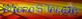
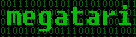
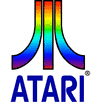

Site
des émulateurs Atari :
http://www.atari.st/pacifist/ [PaCifiST]
http://winston.fatal-design.com/ [WinSTon]
http://saint.atari.org/ [SainT]
http://steem.atari.st/ [STEEM]
http://steem.atari.st/beginners.htm [FAQ STEEM]
ROMs
Atari à télécharger pour l'émulateur :
http://homepage.mac.com/carlhafner/AtariTOS.html [Pangaelin
Willow]
http://members.tripod.com/~piters/atari/tosload.htm [SELTOS]
GEM
& Gemdos :
http://www.mucl.de/~mdoering/atari/en/index.htm [Martin Döring]
http://www.deltasoft.com/ [the new GEM web site]
Les
magazines ou fanzines Atari français et étrangers :
http://www.st-news.com/ [STNEWS]
http://toxicmag.planet-d.net/ [Toxicmag]
http://www.atari.org/ [Atari.org]
http://www.myatari.net/ [myatari.net]
http://www.ataritoday.com/ [ataritoday.com]
http://www.angelfire.com/retro/cafefuji/ [CaféFuji]
http://atari4ever.free.fr/ [ATARI4ever]
http://alive.atari.org/alive.html [Alive
Online Issues]
http://www.tscc.de/ucm.html [UCM
Online Issues]
http://www.asterius.com/atari/ [Antic magazine]
http://stmagazine.org/ [STMAG nouvelle génération]
 http://perso.club-internet.fr/didier.letot/ [MicroSTalgia]
Documentations/Développements :
http://atari.scum.org/aldevdoc.htm [Levien van Zon]
http://www.programmersheaven.com/zone20/index.htm [Programmers Heaven]
http://www.atari-st.lovely.net/atari-st-docs/index.html [Atari-ST Docs]
http://www.fortunecity.com/skyscraper/apple/308/html/ [The Atari Compendium Index]
http://perso.club-internet.fr/rdet/FilesATA/AtariST.htm [connectiques ATARI ST]
http://devdoc.free.fr/ [DEV Doc]
http://topp.atari-users.net/ [Orphan Projects]
http://pp.fishpool.fi/~q-funk/ST/ [ST QUICK F.A.Q.]
http://members.aol.com/liamproven/reference/tos_hist.htm [Atari TOS history]
http://www.oldskool.org/disk2fdi/ [the official Disk2FDI project]
http://home.tu-clausthal.de/~ifmar/makedisk/ [The Makedisk Tutorial]
http://tomas.nocrew.org/DSP/DSP-main.html [Tomas Berndtsson]
http://www.czuba-tech.com/ [Czuba-Tech]
http://pasti.fxatari.com/ [Pasti Project]
 http://mysite.wanadoo-members.co.uk/x3peri_mental/ [x3peri_mental]
http://mysite.wanadoo-members.co.uk/x3peri_mental/ [x3peri_mental]
Le
GFA Basic :
http://www.gfasoft.gfa.net/eng/index.htm [only
PC]
http://www.hadley.de/gfa-basic/ [Hadleys ATARI-Welt]
 http://www.rowalt.de/pc/gfabasic/ueber.htm [Über GFA-Basic]
http://www.rowalt.de/pc/gfabasic/ueber.htm [Über GFA-Basic]
Et les sources...
http://aicq.atari-users.net/
http://www.personal.u-net.com/~bjcg/home.htm
http://www.geocities.com/slaszcz/ [Atarious]
http://perso.wanadoo.fr/michel.goux/dompub/ [Dompub 030]
 http://www.bright.net/~gfabasic/ [Lonny Pursell]
http://www.bright.net/~gfabasic/ [Lonny Pursell]
 http://home.tu-clausthal.de/~ifmar/gfabasic/ [Matthias Arndt]
http://home.tu-clausthal.de/~ifmar/gfabasic/ [Matthias Arndt]
Assembleur
(DEVPACK) :
http://atariste.free.fr/ [ATARI
ST IMAGE RIOT]
http://graveyard.atarilegend.org/ [Andreas]
ATARI
USERS LIST :
http://perso.easynet.fr/~thleroy/a-u-l/index.htm [Base de données d'Ataristes]
http://jydurand.free.fr/ [Liste
revendeurs Ataristes]
http://www.st.scene.free.fr/ [Atari ST/Falcon Scene Database]
FORUMS :
http://www.atari-forum.com/ [PaCidemo & PaCigame forum]
http://www.grospixels.com/phpBB/index.php [Grospixels]
http://omiquel.lautre.net/forum/ [Emulation Atari ST]
http://atari.st/forum/list.php?f=7 [LGD
- Fuji BBS]
http://atari.st/forum/list.php?f=9 [LGD
- St Games BBS]
http://atari.st/forum/list.php?f=8 [LGD
- St Emulator BBS]
http://www.yaronet.com/forum.php?s=9 [Yaronet]
http://forums.emunova.net/index.php?showforum=26 [Emu Nova]
 http://www.silicium.org/forum/viewforum.php?f=44 [My SILICIUM]
http://www.silicium.org/forum/viewforum.php?f=44 [My SILICIUM]
Compiles
de Démos :
http://pacidemo.atarilegend.org/ [PaciDemo]
 http://megatari.atariarchive.com/ [Megatari]
http://www.povcd.free-online.co.uk/ [POV]
http://wwwbrauer.informatik.tu-muenchen.de/~brandtf/ [Atari Demo History]
http://no-fragments.atari.org/ [No
Fragments CD]
 http://www.recycledsteel.co.uk/trooper/ [Deus
ex Atari]
http://www.recycledsteel.co.uk/trooper/ [Deus
ex Atari]
Les
groupes de Démos :
http://hem1.passagen.se/carebear/ [Carebears]
http://www.lysator.liu.se/~celeborn/sync/ [Sync]
http://equinox.planet-d.net/index.html [Equinox]
http://www.dhs.nu/ [Dead Hackers Society]
http://impact.atari.org/ [Impact]
http://home.earthlink.net/~chhome/ancool.html [AnCool]
http://homepages.tesco.net/~mark.davies/ [Persistance of Vision]
http://deunstg.free.fr/sct1/ [Sector One]
http://www.cpu.lu/ulm/ [ULM]
http://hem.passagen.se/rubbish/zeal/ [Zeal]
http://hem1.passagen.se/newcore/ [NewCore]
http://www.sharpox.com/tbc/ [The Black Cats]
http://stsurvivor.atari.org/ [Loud!]
 http://leonard.oxg.free.fr/ [Leonard/OXYGENE]
http://leonard.oxg.free.fr/ [Leonard/OXYGENE]
http://fantasy.planet-d.net/main.html [Fantasy]
http://wwwbrauer.informatik.tu-muenchen.de/~brandtf/df.html [Delta Force]
http://perso.wanadoo.fr/mjjprod/ [Mjj Prod]
 http://cyber.savina.net/ [Cybernetics]
http://cyber.savina.net/ [Cybernetics]
http://www.tphf.karoo.net/ [PHF]
http://rg.atari.org/ [Reservoir Dogs]
http://www.sirlab.de/tscc/ [T.S.C.C.]
http://www.defence-force.org/computing/demo/scene/next/ [Next]
http://tpb.ifrance.com/tpb/ [The Pixel Boys]
http://www.chez.com/flabros/ [Front de Libération Atariste]
http://www.npg.net/ [NPG]
http://hem.passagen.se/xia/ [Excellence In Art]
http://www.atari.sk/coolgirls/ [Cool
Girls]
http://www.lynn3686.freeserve.co.uk/tcb.html [Meet
The CareBears]
http://www.hotline9009.com/ [HIT'N
RUN : Elite/Hotline]
http://eil.atari.org/ [ERROR
IN LINE 2003]
http://www.creamhq.de/ [CREAM/old
ACF]
 http://stknights.free.fr/ [ST
Knights]
http://stknights.free.fr/ [ST
Knights]
http://home.tu-clausthal.de/~ifmar/paradize/ [ParadiZe]
http://askdesign.free.fr/ [ASKDESIGN]
http://overlanders.union.free.fr/ [OVERLANDERS]
http://thomas.goirand.fr/ [Zygo/ADRENALINE]
http://www.inf.tu-dresden.de/~nf2/ [ESCAPE]
http://checkpoint.planet-d.net/ [Checkpoint]
http://www.codercorner.com/Holocaust.htm [Holocaust]
http://sine.idemline.free.fr/IDEMLINE.WEB/IDEMLINE.HTM/ [IdemLine]
http://xtroll.ubuxe.de/ [XTROLL]
http://www.dune-design.com/ [DUNE]
http://www.xs4all.nl/~demming/ [Atari
Boys]
http://clafou.free.fr/ [BigFoot/MJJPROD]
http://cerebral-vortex.net/ [Cerebral
Vortex]
http://home.cogeco.ca/~jelite/aardvarks/ [The
Evil Force]
http://www.kewlplace.com/sinister/ [Sinister
Developments]
 http://membres.lycos.fr/epsitms/ [Epsilon]
http://membres.lycos.fr/epsitms/ [Epsilon]
Les
productions de jeux Atari :
http://www.chez.com/m520/ [M520]
http://edv-rudolf.de/lethal-xcess/ [Wings of Death 2]
http://perso.wanadoo.fr/gallazsoft/ [BLITZ]
Compiles
de Jeux :
http://www.spiny.org/medway/ [Medway Boys]
http://www.tphf.karoo.net/dbug/ [Dbug]
http://www.rippedoffdemocds.com/ [Ripped Off]
http://home.tu-clausthal.de/~ifmar/pompey/news.shtml [Pompey Pirates]
http://mysite.freeserve.com/neonlights/index.htm [Neon Lights]
http://fuzionshrine.omiquel.lautre.net/ [Fuzion Web Shrine]
http://paci.game.free.fr/ [PaCigame Area]
 http://www.mtl-music.de/BSW_DCD/ [The Blue Software]
http://www.mtl-music.de/BSW_DCD/ [The Blue Software]
Ou
trouver des Jeux/Compiles pour ATARI ST sur le Net :
http://www.atari.st/ [Little
Green Desktop]
http://mrnours.atari.org/ [Mr Nours]
http://www.lankhor.net [les
jeux LANKHOR]
http://gorila.8m.com/main.htm [Gorila Atari WorldHeadquarters]
http://ahladnik.free.fr/
http://atariforce.free.fr/ [ATARI
FORCE]
http://www.if-legends.org/~msmemorial/ [The Magnetic Scrolls Memorial]
http://www.aitpast.com/ [Alone in the Past]
http://www.gods-country.de/ [The Chaos Regime]
http://homepage.ntlworld.com/des.watson2/ [ST
Encyclopedia]
http://atariste.free.fr/ [ATARI
ST IMAGE RIOT]
http://atari.ma.cx/ [HALL
OF FAME]
http://tontonbruno.free.fr/ [TONTON
BRUNO]
http://dmweb.free.fr/ [The Dungeon Master/Chaos Strikes Back Encyclopaedia]
http://www.atarilegend.com/ [Atari Legend]
http://www.atari-shrine.co.uk/ [Lee's
ATARI ST Shrine]
 http://www.atariarchive.com/ [AtariArchive]
http://www.atariarchive.com/ [AtariArchive]
Utilitaires :
http://mycrapsite.free.fr/ [MyCrapSite v2.0]
http://www.chebucto.ns.ca/Services/PDA/atari.html [Atari St software]
http://paricard.free.fr/ [Paricard]
http://members.aol.com/tgkirk/ [Tom Kirk's Atari Site]
http://www.mug-uk.co.uk/ [MUG U.K(tm)]
http://skyscraper.fortunecity.com/module/371/st.htm [Atari
ST Abandonware]
http://calamus.chez.tiscali.fr/ [Calamus
SL]
http://www.povray.org/ [POV]
http://www-computerlabor.math.uni-kiel.de/~oschmidt/everest.html [Everest]
Game
cheats :
http://www.gamewinners.com/AST/index.html [Gamewinners.com]
Les
émulateurs Atari sur Mac :
http://users.skynet.be/sky39147/ [NoSTalgia & PowerST]
http://www.emulation.net/atarist/index.html [PowerST]
Les
émulateurs Atari sous Unix/Linux :
http://www.complang.tuwien.ac.at/nino/stonx.html [STONX]
http://steem.atari.st/ [XSTEEM]
http://hatari.sourceforge.net/ [HATARI]
Musiques
:
http://perso.wanadoo.fr/stalive/ [STALIVE]
http://leonard.oxg.free.fr/ [LEONARD]
http://www.chiptune.com/ [CHIPTUNE]
http://sndplayer.atari.org/ [SND Player]
http://www.syncscroller.net/coso/coso.html [COSO-Tracker]
http://zikatari.free.fr/ [WOGO]
http://www.notator.org/ [The
Notator SL user-group]
http://atari.lautre.net/music/index.htm [MUSIC.ATARI.ORG]
http://tamw.atari-users.net/cubase.htm [start
CUBASE ST]
 http://exotica.fix.no/tunes/ [Tunes]
http://exotica.fix.no/tunes/ [Tunes]
 http://chiptunes.back2roots.org/ [ChipTune
Archive]
http://chiptunes.back2roots.org/ [ChipTune
Archive]
Divers
:
http://atari4ever.free.fr/hardware/ [The
Atari Hardware Hack Page]
http://atariste.free.fr/transfert.htm [AIDE AU TRANSFERT ST/PC par TiK]
http://defence-force.org/ [Defence Force]
http://www.ifrance.com/preverdy/ [REVERDY Philippe]
http://www.grospixels.com/ [Grospixels]
http://mo5.com/ [MO5.COM]
http://www.abandonware-magazines.org/ [Le site des vieux Magazines]
http://www.btinternet.com/~AnthonyJ/Atari/index.html [Anthony Jacques]
http://ilikeu.users.btopenworld.com/Index.html [Richard Stevens]
http://www.atari-explorer.com/ [Atari Historical Society]
http://perso.wanadoo.fr/daroou/ [Renaissance]
http://perso.club-internet.fr/lafabrie/Atari/ [FLORENT LAFABRIE]
http://mifshow.free.fr/Atari/atari.php [MifShow]
http://www.gamebasest.pwp.blueyonder.co.uk/ [Gamebase ST]
Photo diverses :
Photos du petit monde de l'Atari ST [FlickR]
Mise
à jour le 26 aout 2007. |